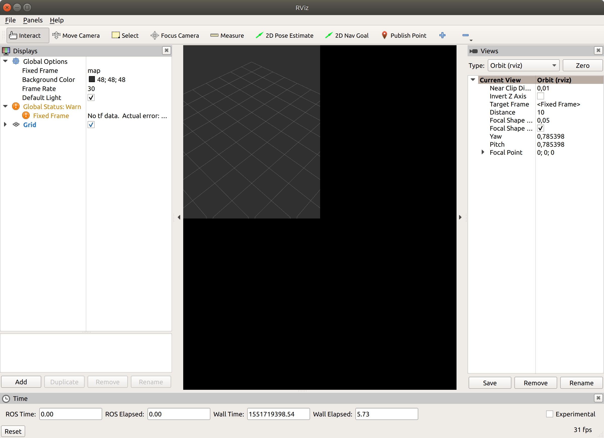

Turtlebot3 y ROS Melodic en Ubuntu 18.04
Al empezar a hacer pruebas con el Turtlebot3 empezaron a aparecer algunos problemas de compatibilidad relacionados con las diferentes versiones de ROS y Ubuntu, que se resumen en:
- El código del Turtlebot3 está escrito para la versión Kinetic de ROS.
- Kinetic es compatible con las versiones Wily (15.10) y Xenial (16.04) de Ubuntu.
- En mi ordenador tengo instalado Ubuntu Bionic (18.04), versión para la que Kinetic no es compatible.
- ROS Melodic, la versión que tiene soporte para Ubuntu 18.04, no tiene soporte completo para Turtlebot3 (algunos de los módulos y funciones necesarios para el Turtlebot3 aún no se han portado a Melodic)
TL;DR: La versión de ROS que puedo instalar “fácilmente” en mi sistema operativo no da soporte completo al Turtlebot3, y a la vez la versión de ROS que da soporte a Turtlebot3 no es compatible con mi sistema operativo. Incompatibilidad en ambos sentidos.
Esto me dejaba varias posibles soluciones:
- Crear una máquina virtual corriendo Ubuntu 16.04 e instalar ROS Kinetic.
- Usar Docker para crear un contenedor con Ubuntu 16.04 e instalar ROS Kinetic.
- Usar una de las imágenes de Docker con ROS preinstalado con la versión Kinetic.
- Usar Ubuntu 18.04 y ROS Melodic e ir solucionando los problemas a medida que surjan.
La máquina virtual la descarté de mano, por ser más práctico usar los contenedores de Docker. Sin embargo, como en los grupos de usuarios de ROS se habla de que todo el código del Turtlebot3 se está portando poco a poco a Melodic, opté por probar con la última opción e ir resolviendo los problemas a medida que se iban amontonando produciendo.

Instalación de módulos no portados a Melodic
Instalar los módulos que no estan aún portados resulta más fácil de lo podría pensarse. Aunque no estén disponibles para ROS Melodic, los repositorios de cada uno de ellos están disponibles en GitHub; muchos ya tienen una rama lista para ser integrada en futuras actualizaciones de Melodic, y el resto pueden descargarse y compilarse con las características del sistema que se emplee. Los módulos necesarios para hacer funcionar el Turtlebot3 y que no están disponibles en Melodic pero pueden instalarse desde GitHub son:
openslam_gmapping-
slam_gmapping: módulo de creación de mapas mediante SLAM (Simultaneous Localization and Mapping) -
hector_slam,slam_karto: otros métodos de cartografiado utilizados por el Turtlebot. -
frontier_exploration: módulo de exploración de mapas. -
teleop_twist_joy: utilización de joystick para controlar el robot.
Estos paquetes se pueden descargar o clonar en el directorio src del proyecto y compilar con catkin_make o catkin build. El resto de paquetes disponibles para Melodic se instalan mediante el gestor de software de Ubuntu, o mediante apt-get o similar.
Mapas globales y locales
Un error que aparece por cambios en Melodic respecto a Kinetic se produce por diferencia del criterio usado a la hora de definir la ruta a los mapas en el paquete de navegación del Turtlebot3.
[Reproducción del error] [Explicación del problema]
Para solucionarlo hay que editar dos archivos dentro del directorio src/turtlebot3_navigation/params, en los que se definen algunos parámetros necesarios para la navegación.
Uno de los archivos que hay que modificar en dicho directorio es global_cost_map_params.yaml, eliminando las barras en/map y /base_footprint:
global_costmap: global_frame: /map robot_base_frame: /base_footprint
para que queden del siguiente modo (nótese la ausencia de barras delante de los parámetros):
global_costmap: global_frame: map robot_base_frame: base_footprint
El segundo archivo a modificar es local_costmap_params.yaml, eliminando las barras para que queden del siguiente modo:
local_costmap: global_frame: odom robot_base_frame: base_footprint
Con esto los parámetros map, base_footprint (tanto para los parámetros globales como locales) y odom se definen como relativos al propio paquete, y no como absolutos como ocurre con el caso de colocar la barra (/) delante.
Bola extra: problemas de visualización en rviz
Otro problema derivado de la pantalla de alta resolución de mi portátil, un Dell XPS 13, son los problemas de visualización en rviz, el visualizador que usa ROS; además, al intentar redimensionar la ventana o al colocar otra ventana encima, no se actualiza el contenido, por lo que no es utilizable.

Para solucionarlo, basta con exportar (para dejarlas en blanco) dos variables de entorno:
export QT_AUTO_SCREEN_SCALE_FACTOR= export QT_SCREEN_SCALE_FACTORS=
Con estos pasos, el entorno está plenamente funcional.